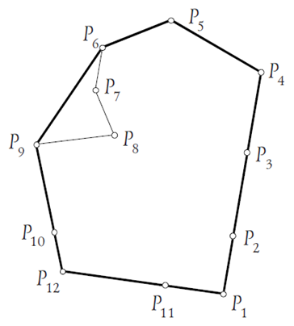
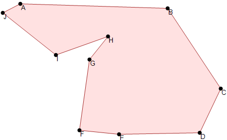

CGeometry
Задачи вычислительной геометрии
Задачи вычислительной геометрии

Данная программа предназначена для тех, кто хочет изучать математику, а также для решения задач информатики.
Существует определенный комплект основных задач, которые являются с одной стороны самостоятельными задачами, а с другой стороны базовыми задачами для решения более сложных, олимпиадных задач по программированию.
Я попытался запрограммировать решение этих задач по их математическому алгаритму и визуализировать некоторые из них.
Данная работа может быть полезной как ресурс ученикам для самообразования, так и учителям как демонстрационная программа.

Выпуклой оболочкой некоторого заданного множества точек называется пересечение всех выпуклых множеств, содержащих заданное множество. Для конечного множества точек выпуклой оболочки всегда будет выпуклый многоугольник, все вершины которого являются точками исходного множества.
Задача состоит в том, чтобы для заданного конечного множества точек найти вершины выпуклой оболочки этого множества. Будем перечислять вершины в порядке обхода против часовой стрелки. Для эффективного решения этой задачи существует несколько различных алгоритмов. Приведем наиболее простую реализацию одного из них – алгоритма Джарвиса. Этот алгоритм иногда называют «заворачиванием подарка».

Перечисление точек искомой границы выпуклого многоугольника начнем с правой нижней точки P1, которая заведомо принадлежит границе выпуклой оболочки. Обозначим ее координаты (x1, y1). Следующей при указанном порядке обхода будет точка P2 (x2, y2). Она, очевидно, обладает тем свойством, что все остальные точки лежат «слева» от вектора P1P2, т.е. ориентированный угол между векторами P1P2 и P1M неотрицателен для любой точки M нашего множества. Для кандидата на роль точки P2 проверяем выполнение условия [P1P2, P1M] ? 0 со всеми точками M. Если точек, удовлетворяющих этому условию, несколько, то вершиной искомого многоугольника станет та из них, для которой длина вектора P1P2 = (x2 - x1, y2 - y1) максимальна.
Будем поступать так же и дальше. Допустим, уже найдена i-я вершина Pi (xi, yi) выпуклой оболочки. Для следующей точки Pi+1 (xi+1, yi+1) косые произведения [PiPi+1, PiM] неотрицательны для всех точек M. Если таких точек несколько, то выбираем ту, для которой вектор PiPi+1 имеет наибольшую длину. Непосредственно поиск такой точки можно осуществлять так. Сначала мы можем считать следующей, (i+1)-й, любую точку. Затем вычисляем значение [PiPi+1, PiM], рассматривая в качестве M все остальные точки. Если для одной из них указанное выражение меньше нуля, считаем следующей ее и продолжаем проверку остальных точек (аналогично алгоритму поиска минимального элемента в массиве). Если же значение выражения равно нулю, то сравниваем квадраты длин векторов. В результате за O(N) операций очередная вершина выпуклой оболочки будет найдена. Продолжая эту процедуру, мы рано или поздно вернемся к точке P1. Это будет означать, что выпуклая оболочка построена.
При решении данной задачи в случае изначально целочисленных координат мы полностью можем избежать применения вещественной арифметики, а следовательно, избавиться от потери точности вычислений. В противном случае в решение могут быть включены «лишние» точки, близкие к границе выпуклой оболочки, или не учтены некоторые из «нужных» точек. Сложность данного алгоритма составит O(kN), где k – количество точек в выпуклой оболочке, в худшем случае равное N.
Существует другой алгоритм решения этой задачи (алгоритм Грэхема) с вычислительной сложностью O(N logN), основанный на предварительной сортировке точек исходного множества по значению угла в полярной системе координат с центром в одной из точек выпуклой оболочки. То есть наиболее трудоемкой задачей оказывается именно сортировка исходных точек. Сортировку точек можно производить по знаку косого произведения [P1Pi, P1Pi+1], где P1 – любая вершина выпуклой оболочки (например, все та же правая нижняя точка). В отсортированном массиве точек все указанные произведения должны быть неотрицательны. Точки с разными углами ([P1Pi, P1Pi+1] = 0) Располагаются в порядке увеличения длин соответствующих векторов P1Pi.
Далее просмотр Грэхема использует стек, в котором хранятся точки, являющиеся кандидатами в выпуклую оболочку. Сначала в стек помещается первая из отсортированных точек. Затем – соседняя с ней вершина выпуклой оболочки. Если на первом из лучей точек несколько, то это точка этого луча Pi, наиболее удаленная от P1. Третьей – точка Pi+1. Пусть в вершине стека находится точка Pk. Рассмотрим следующую в порядке увеличения полярного угла точку исходного множества Pi. Пока участком ломаной Pk-1PkPi не является выпуклым, из стека удаляется очередная точка Pk. Затем Pi помещается в стек. В момент окончания просмотра всех точек в стеке будут находиться в точности все вершины выпуклой оболочки. Так как любая точка добавляется в стек ровно один раз, то и удаляется она из него не более одного раза, поэтому время просмотра составляет O(N).
Выпуклость многоугольника с вершинами P1, P2, ..., Pn, перечисленными в порядке его обхода, легко проверить, если вычислить знаки косых произведений [PiPi+1, Pi+1Pi+2], i = 1, ..., n (здесь Pn+1 есть P1, a Pn+2 - P2). У выпуклого многоугольника знаки всех указанных произведений либо неположительны, либо неотрицательны (то есть знаки ненулевых произведений совпадают). Если мы знаем направление обхода, то знак косых произведений для выпуклого многоугольника определен: при обходе по часовой стрелке все косые произведения неположительны, а против часовой стрелки – неотрицательны.
Выпуклый многоугольник:

Невыпуклый многоугольник:
Пусть M – некоторая точка плоскости. Требуется определить ее местонахождение относительно замкнутой ломаной, являющейся границей многоугольника. Рассмотрим сначала случай выпуклого многоугольника. Пусть заданные своими координатами вершины многоугольника P0, P1, ..., Pn-1 перечислены в порядке его обхода против часовой стрелки. При таком обходе многоугольник лежит слева границы. И, значит, если точка M лежит внутри многоугольника, то ориентированный угол между векторами PiM и PiPi+1 отрицателен. Поэтому нам достаточно подсчитать величину косых произведений [PiM, PiPi+1], i = 0, 1, ..., n-1; значение i+1 берется по модулю n. Если все полученные при этом значения отрицательны, то точка M внутреняя. Если же одно из них равно нулю, а все остальные отрицательны, то M принадлежит границе многоугольника (убедитесь, что просто равенства нулю одного из значений не достаточно). В противоположном случае M лежит вне нашего многоугольника.
Рассмотрим теперь произвольный многоугольник. Проведем горизонтальный луч из точки M, например, влево. Так как многоугольник ограничен, то всегда легко указать на этом луче точку P(x,y), заведомо ему не прилежащую. Далее подсчитаем количество пересечений отрезка PM с границей многоугольника. Если оно равно нулю или четно, то точка M лежит вне многоугольника, в противном случае – внутри него.
Количество пересечений отрезка PM с границей мы подсчитаем, рассмотрев по очереди пересечение отрезка PM с каждым из звеньев ломаной. При этом возможны следующие особые случаи.
В последнем случае M принадлежит границе многоугольника, и в подсчете общего числа пересечений необходимости нет. Для двух первых случаев поступим следующим образом. В первом случае пресечение будем игнорировать. Во втором – дополнительно проверим, «нижним» или «верхним» концом звено ломаной касается горизонтального отрезка PM. Если точкой касания является «нижний» конец звена, то пересечение игнорируется, а если «верхний» - то зачитывается. С учетом этого соглашения касание отрезка PM границы многоугольника в одних точках игнорируется, а в других точках считается дважды. Это не изменит четности числа пересечений, а только она важна при поиске ответа на вопрос данной задачи. Если же отрезок действительно пересекает ломаную в ее вершине, то, по нашему соглашению, число пересечений как раз увеличится на единицу (пересечение с верхним ребром засчитано не буде, а с нижним – будет). Например, на рисунке ниже количество пересечений для верхнего из исследуемых точек будет равно четырем (касание засчитано дважды), а для нижней точки – трем (касание не учтено, а пересечение в вершине ломаной учтено один раз).

Эта задача состоит в отыскании координат центра окружности минимально возможного радиуса, внутри которой находятся все заданные точки. Иногда эту проблему называют минимаксной задачей «о культурном центре». В ней требуется по координатам домов в городе подобрать место для строительства культурного центра так, чтобы расстояние до максимально удаленного от него дома было минимальным. Для того чтобы понять решение этой задачи в общем случае, рассмотрим сначала «треугольный» вариант: N=3.
Даже для трех точек вид решения существенно зависит от их взаимного расположения. Пусть точки лежат на одной прямой или образуют тупоугольный треугольник. Тогда искомая точка лежит на середине отрезка, соединяющего наиболее удаленные друг от друга точки (в середине наибольшей стороны тупоугольного треугольника). В самом деле, расстояние от этой точки до любой из первых двух уменьшить нельзя, а третья точка находится на меньшем расстоянии от найденной точки, следовательно, она лежит внутри окружности, диаметр которой образуют две другие точки. А для остроугольного треугольника решением является центр описанной вокруг него окружности (смещение искомой точки от него в любом направлении приведет к увеличению расстояния хотя бы до одной из точек). Прямоугольный треугольник является «пограничным» для этих двух случаев, то есть для него искомую точку можно находить любым из описанных способов (конечно, первый способ вычислительно более простой).
Для произвольного N также есть два случая. Если найдутся две такие точки, что окружность, построенная на соединяющем их отрезке, как на диаметре, содержит все остальные точки (то есть для них выполняется неравенство (xi - x0)2 + (yi - y0)2 ≤ r2, где (x0,y0) – центр окружности), то эта окружность – искомая (фактически это случай «тупоугольного треугольника»). Если же такой пары точек не нашлось, то искомая окружность заведомо проходит хотя бы через три из исходных точек. Поэтому теперь необходимо перебирать все тройки точек до тех пор, пока не найдется такая тройка, что проходящая через эти точки окружность будет заключать внутри себя все остальные точки (случай «остроугольного треугольника»).

Чтобы построить точки нужно в панели элементов выбрать режим "Точка" и расставить точки в нужных местах на полотне. Точки будут нумероваться целыми числами.
Чтобы построить отрезок нужно в панели элементов выбрать режим "Отрезок" и расставить две точки в нужных местах на полотне. Точки будут нумероваться буквами латинского алфавита и целыми числами(A1, B1, ...). В панели "Текущий объект" будет указываться длина отрезка.
Чтобы построить многоугольник нужно в панели элементов выбрать режим "Многоугольник" и расставить вершины многоугольника в нужных местах на полотне. Чтобы завершить построение многоугольника нужно нажать на кнопку "Завершить" в панели элементов или дважды кликнуть по полотну. Вершины многоугольника будут нумероваться буквами латинского алфавита и целыми числами(A1, B1, ...). В панели "Текущий объект" будут указываться длины сторон многоугольника и его выпуклость.
Чтобы построить окружность нужно в панели элементов выбрать режим "Окружность" и расставить две точки в нужных местах на полотне(первая - центр окружности, вторая - точка окружности). В окне "Текущий объект" будут указываться радиус окружности и координаты его центра.
Чтобы переместить объект нужно в панели элементов выбрать режим "Переместить", навести мышь на объект и переместить его в нужное место, зажав кнопку мыши.
Чтобы закончить построение объекта нужно в панели элементов нажать кнопку "Закончить".
Чтобы удалить объект нужно в панели элементов выбрать режим "Удалить", выбрать объект, который нужно удалить и кликнуть на него.
Чтобы построить выпуклою оболочку нужно в панели задач выбрать режим "Выпуклая оболочка" и расставиь точки в нужных местах на полотне инструментом "Точка". Точки будут нумероваться целыми числами. Оболочка будет строиться автоматически. После построения выпуклой оболочки следует в панели задач нажать на кнопку "Отключить задачу".
Чтобы проверить оболочку на выпуклость нужно в панели задач выбрать режим "Проверить на выпуклость" и кликнуть на многоугольник который нужно проверить на выпуклость.
Чтобы проверить принадлежность точки многоугольнику нужно в панели задач выбрать режим "Точка внутри полигона" и кликнуть на место расположения точки которую нужно проверить.
Чтобы построить окружность минимального радиуса "охватывающую" N точек плоскости нужно в панели задач выбрать режим "Минимальная окружность вокруг точек" и расставиь точки в нужных местах на полотне. Окружность строится автоматически. После построения окружности следует в панели задач нажать на кнопку "Отключить задачу".
Чтобы построить опуклую оболочку пошагово нужно нажать кнопку "Анимация опуклой оболочки" и построится опуклая оболочка вокруг расставленых предварительно точек инструментом "Точка". После построения окружности следует в панели задач нажать на кнопку "Отключить задачу".